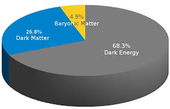

La energia oscura es el componente dominante del contenido energetico del universo, responsable de su expansion acelerada. Representa aproximadamente el 68 por ciento del presupuesto cosmico total.
En 1998, observaciones de supernovas tipo Ia revelaron que la expansion del universo no se esta desacelerando, sino acelerando. Este hallazgo implico la existencia de un componente con presion negativa.
La explicacion mas sencilla es la constante cosmologica introducida por Einstein en las ecuaciones de campo. Esta constante representa una densidad de energia asociada al vacio cuantico.
Alternativamente, se han propuesto modelos de energia oscura dinamica, como la quintaesencia, en los que un campo escalar evoluciona con el tiempo.
La naturaleza de la energia oscura determina el destino cosmologico. Si su densidad permanece constante, el universo experimentara una expansion eterna. Si aumenta con el tiempo, podria conducir a un escenario de Big Rip.
Existe una discrepancia enorme entre la densidad de energia del vacio predicha por la teoria cuantica de campos y el valor observado cosmologicamente, lo que constituye uno de los mayores problemas abiertos de la fisica fundamental.
